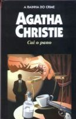

Cai o Pano
Curtain: Hercule Poirot's Last Case
Hercule Poirot encerra o círculo de sua vida na Grã-Bretanha. Sabendo que o fim está próximo, muda-se para Styles, tentando solucionar seu último caso, e o mais difícil, no mesmo lugar onde havia resolvido o primeiro. Um dos hóspedes daquela casa sinistra — na qual se respira o ar maligno de um antigo crime — é um assassino em série, diabolicamente inteligente, que matou cinco pessoas e está disposto a continuar. Transformado num pobre inválido, imóvel numa cadeira de rodas, Poirot parece inferiorizado frente a um astucioso e sutil matador, que precisa ser descoberto e também castigado, porque a justiça oficial nunca o condenaria. Poirot cumpre com o seu duplo propósito e morre, embora sua morte seja apenas aparente, pois os personagens de ficção não desaparecem, e sempre poderemos ler novamente as aventuras de um Sherlock Holmes, o Pai Brown, o delegado Maigret, Philipp Marlowe..., integram a mais seleta galeria dos detetives imortais.
Mariane Ferreira: É um dos livros mais intrigantes de Agatha Christie, porque chega a um ponto em que você pensa que é o fim de Poirot. Ele se vê cercado de ameaças do próprio assassino, que o desafia em cada caso, e Poirot, de mãos atadas, apenas assiste os crimes, desesperado. Ao final, com um cérebro digno de um gênio, Poirot entende toda a história, como sempre faz e descobre o tão misterioso homem.
Allan Jozala: Poirot está de volta a Styles mas não é a passeio. Agora inválido, o melhor detetive de todos encontra em seu último caso o assassino perfeito, aquele que nunca seria condenado e com muita classe encerra sua carreira definitivamente e faz deste o melhor livro de Agatha Christie.
Arthur Nogueira: Hercule Poirot, o famoso detetive belga, se encontra, em seu último caso, num estado deplorável. Velho e em uma cadeira de rodas ele tenta impedir, com a ajuda do cap. Hastings, um assassino lunático de matar todos os hóspedes da antiga Styles, local do seu primeiro caso. Após “O Caso dos Dez Negrinhos”, “Cai o Pano” é o livro mais interessante para mim, pois você começa a desconfiar de todos, mas todos tem um certo álibi. É impossivel parar de ler.
Deborah Findeiss: O Capitão Hastings viaja à uma casa em que ele e seu velho amigo Hercule Poirot desvendaram crimes há alguns anos atrás. Quando chega lá, vê que seu velho amigo está muito doente, sem andar e quase morrendo. Quando novos crimes acontecem na casa, Hastings pede a ajuda de Poirot para tudo. No final, nem tudo era o que parecia ser ...